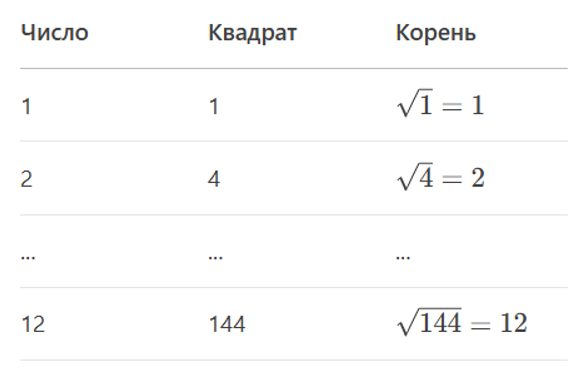

Извлечение квадратного корня
Квадратный корень из числа a — это число b, которое при
возведении в квадрат даёт a.
Обозначение:
√ 25 = 5, потому что 52 = 25.
Примеры:
√ 16 = 4
√ 100 = 10
Извлечение корня из полных квадратов
Алгоритм:
- Вспомнить таблицу квадратов чисел от 1 до 20.
- Найти число, которое при возведении в квадрат даёт подкоренное выражение.
Таблица для запоминания:

Например:
√ 49 = 7√ 81 = 9√ 121 = 11
Приближённое извлечение корня
Если число — не полный квадрат:
- Найти ближайшие квадраты.
- Оценить значение между ними.
Пример:
√ 50- Ближайшие квадраты:
72 = 49и82 = 64. 49 < 50 < 64→7 < √ 50 < 8- Приближение:
√ 50 ≈ 7.1.
Метод подбора:
- Попробуем
7.1: 7.12 = 50.41– много. - Попробуем
7.07: 7.072 ≈ 50– почти точно.
Письменный метод
Алгоритм «Столбиком»:
- Разбить число на пары справа налево.
- Подобрать цифру результата пошагово.
Пример:
√ 529.
- Разбиваем:
5 29. - Ищем число, квадрат которого
≤ 5:22 = 4. - Вычитаем:
5 - 4 = 1, сносим29→129. - Удваиваем текущий результат (
2 → 4), подбираем цифруx:(40 + x) * x ≤ 129.x = 3(43 * 3 = 129). - Ответ:
√ 529 = 23.